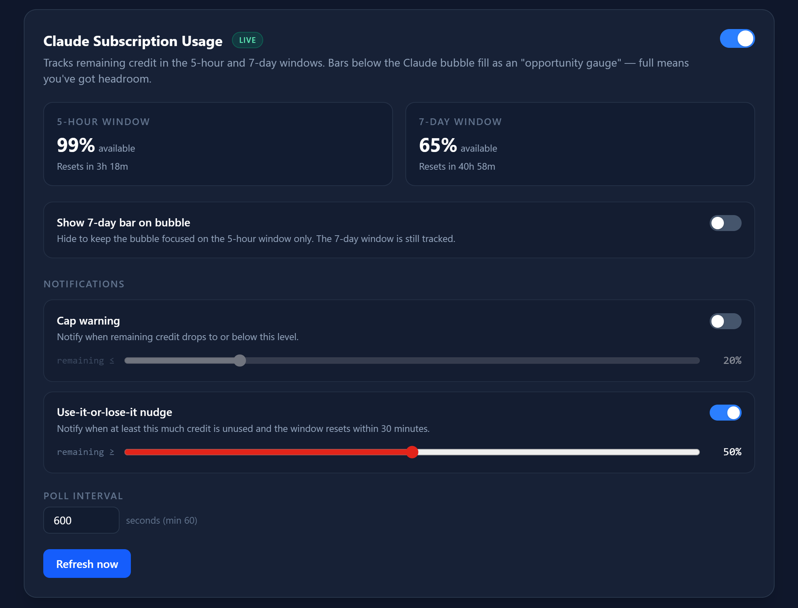
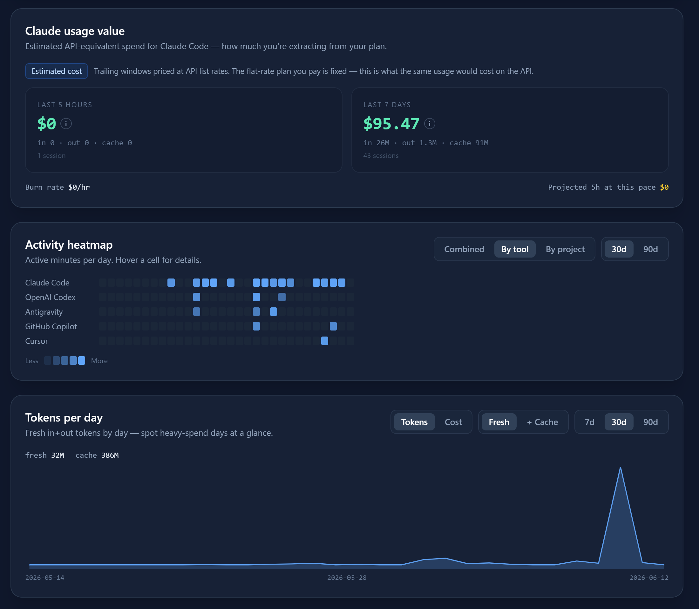

Working
Your AI agents, at a glance.
One unified surface
Every agent.
One glance.
Working, waiting, idle, or crashed — you know without switching windows.
Agent Status

 1
1

More than bubbles.
Usage meters. Local analytics. Command guardrails.

Usage meters
Know your limit before you hit it.

Pulse Timeline
Local analytics & estimated cost.
Command guardrails
Block
rm -rf / before it runs.Agent Pulse
Ambient, glanceable awareness of AI coding agents.
6 tools·0 bytes sent·1 click
100% local. No telemetry.
dipen-dedania.github.io/agent-pulse